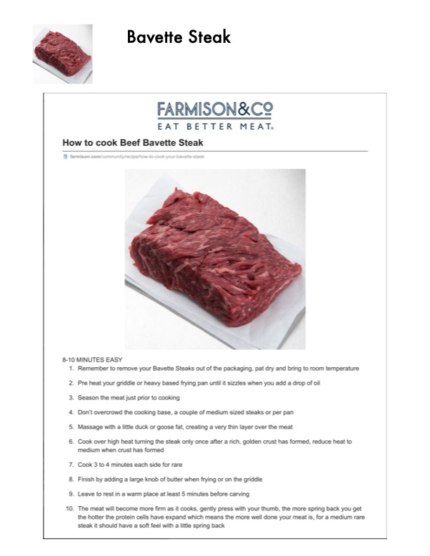

Bavette Steak

Original cookbook page 289
Ingredients
- Bavette steaks
- Duck or goose fat (or oil)
- Salt and pepper
- Butter
Instructions
- Remember to remove your Bavette Steaks out of the packaging, pat dry and bring to room temperature
- Pre heat your griddle or heavy based frying pan until it sizzles when you add a drop of oil
- Season the meat just prior to cooking
- Don't overcrowd the cooking base, a couple of medium sized steaks or per pan
- Massage with a little duck or goose fat, creating a very thin layer over the meat
- Cook over high heat turning the steak only once after a rich, golden crust has formed, reduce heat to medium when crust has formed
- Cook 3 to 4 minutes each side for rare
- Finish by adding a large knob of butter when frying or on the griddle
- Leave to rest in a warm place at least 5 minutes before carving
- The meat will become more firm as it cooks, gently press with your thumb, the more spring back you get the hotter the protein cells have expand which means the more well done your meat is, for a medium rare steak it should have a soft feel with a little spring back
Recipe #289 from collection